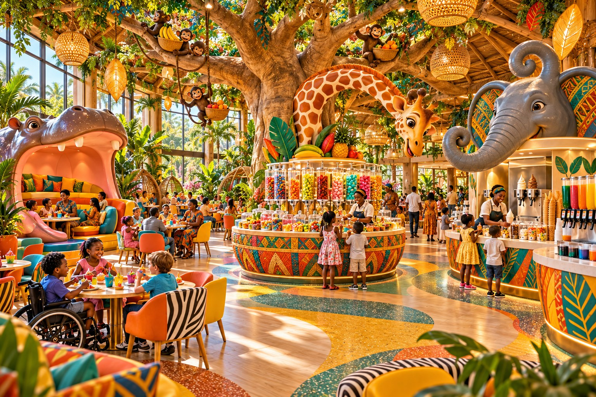

Gräv, bygg och upptäckDig, build and discover
Små handmanövrerade grävmaskiner, sandbyggen och en dinosaurieutgrävning för nyfikna upptäckare.Child-sized manual sand diggers, sand building and a dinosaur discovery area for curious explorers.
En egen värld av lek, fantasi och upptäckter på St Margareta Holiday Home.A world of play, imagination and discovery at St Margareta Holiday Home.
ST MARGARETA · ETT NYTT MYSTERIUMA NEW MYSTERY
Möt beskyddarnas kapten, skapa din sökarflagga och följ med på ett planerat familjeäventyr som börjar redan hemma.Meet the Guardians’ captain, create your explorer flag and discover a planned family adventure that begins at home.
Upptäck äventyretDiscover the adventure →
Konceptbild av lekplatsen och platsen för djurvisningar.Concept illustration of the playground and animal presentation area.
Vi vill skapa en plats som barn längtar tillbaka till. Ett litet äventyr kan börja med att gräva fram dinosaurieben i sanden, kliva ombord på ett piratskepp eller hitta en hemlig tunnel. Här ska det finnas plats för både fartfylld lek och lugnare upptäckter.We want to create a place children look forward to returning to. An adventure might begin by uncovering dinosaur bones in the sand, boarding a pirate ship or discovering a secret tunnel. There should be room for energetic play as well as quieter discoveries.
Små handmanövrerade grävmaskiner, sandbyggen och en dinosaurieutgrävning för nyfikna upptäckare.Child-sized manual sand diggers, sand building and a dinosaur discovery area for curious explorers.
Piratskepp, klättertorn, nätbroar och slingrande rutschkanor är idéer för den stora äventyrsmiljön.A pirate ship, climbing towers, net bridges and twisting slides are ideas for the main adventure area.
Gungor, kompisgunga och en separat yta med lekfulla vattenstrålar ska ge variation under dagen.Swings, a shared nest swing and a separate splash play area would bring variety to the day.
Vi vill planera för olika åldrar och förutsättningar, med lugna lekmiljöer, tillgängliga gångvägar och sandlek vid upphöjda bord.We want to plan for different ages and abilities, with quieter play spaces, accessible paths and sand play at raised tables.

Barnens egen avdelning i restaurangen ska bli ett litet afrikanskt fantasiäventyr. Vi föreställer oss ett stort sagoträd, busiga apfigurer bland grenarna och en giraff som böjer sin långa hals över godishörnan. Här ska färger, former och överraskningar göra även en paus från leken till något att minnas.The children’s own area in the restaurant is imagined as a little African-inspired fantasy adventure. Picture a huge storybook tree, cheeky monkey figures among its branches and a giraffe bending its long neck over the sweet counter. Colours, shapes and surprises would make even a break from play memorable.
Barnen ska kunna ta godis, hämta läsk och njuta av mjukglass i sin egen hörna. I bilden vakar en vänlig elefantfigur över glassdisken, medan flodhästens stora gap blir en fantasifull sittplats för en måltid tillsammans. Djuren är dekorativa figurer som ger rummet liv och personlighet.Children will be able to choose sweets, get a soft drink and enjoy soft-serve ice cream in their own corner. In the illustration, a friendly elephant sculpture watches over the ice cream counter, while a hippo’s enormous mouth becomes an imaginative place to sit and eat together. The animals are decorative figures that give the room character.
Vi vill skapa plats för både stora skratt och en lugn stund vid bordet. Barn och vuxna ska kunna sitta tillsammans, och gångvägar och bord behöver ge utrymme för olika behov. Den slutliga inredningen och serveringens upplägg utvecklas vidare som en del av hotellplaneringen.We want room for laughter as well as a quieter moment at the table. Children and adults should be able to sit together, with paths and tables that accommodate different needs. Final interiors and serving arrangements will be developed as part of the hotel planning.
Skuggade sittplatser nära leken ska göra det lättare för vuxna och barn att tillbringa tid tillsammans. Vi vill att barnens avdelning blir en naturlig del av familjens vistelse på hotellet.Shaded seating near the play areas would make it easier for adults and children to spend time together. We want the children’s area to be a natural part of a family stay at the hotel.
Åldersindelning, fallskydd, vattenhygien, tillgänglighet och tillsyn behöver utformas i den fortsatta projekteringen. Exakt utrustning och öppettider är ännu inte fastställda.Age groups, impact protection, water hygiene, accessibility and supervision will need to be addressed during detailed design. Exact equipment and opening hours have not yet been confirmed.
Barn leker på olika sätt. Någon vill bygga en sandstad, någon vill klättra och någon vill titta på en stund innan de går med. Därför vill vi utveckla flera slags lekmiljöer. Det ska finnas både plats att röra på sig och aktiviteter som går att upptäcka i en lugnare takt.Children play in different ways. One may want to build a sand town, another wants to climb, and another prefers to watch before joining in. We want to develop different play settings, with room for movement as well as discoveries at a gentler pace.
Barnens avdelning är tänkt som en plats att uppleva tillsammans. En vuxen kan följa med i upptäckterna, hjälpa till vid sandbygget eller finnas nära när barnet provar något nytt. Bilden visar flera idéer samlade; varje del behöver utformas för rätt ålder och förutsättningar innan den kan tas i bruk.The children’s area is intended as a place to experience together. Adults can join the discoveries, help with sand building or stay close as a child tries something new. The image brings together several ideas; each feature needs to suit the intended ages and abilities before it can be used.
Har du en fråga om hotellet eller vill du prata om ett samarbete? Vi vill gärna höra från dig.Have a question about the hotel or want to discuss a partnership? We would love to hear from you.
Mejla ossEmail us ↗Knappen öppnar din mejlapp. Du kan också kopiera adressen nedan.The button opens your email app. You can also copy the address below.